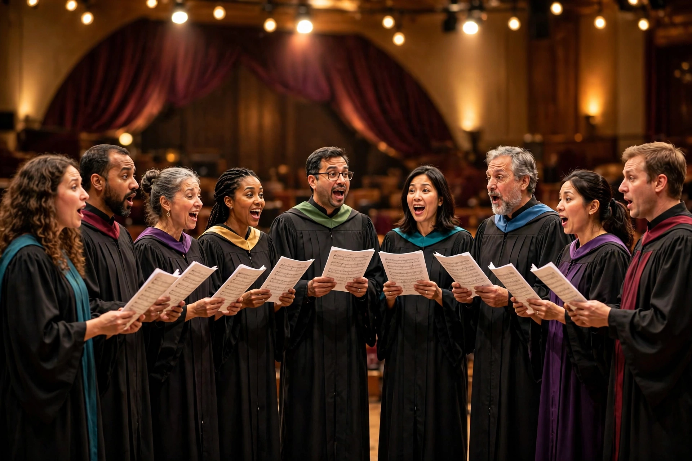

A cappella

| Stylistic origins | Polyphony, church music |
|---|---|
| Cultural origins | Renaissance Europe; sacred choral traditions |
| Typical instruments | Human voice only |
A cappella music is a performance by a singer or a singing group without instrumental accompaniment, or a piece intended to be performed in this fashion. The term is Italian for "in the style of the chapel". In 19th-century usage, the term generally refers to religious music, where composers such as Giovanni Pierluigi da Palestrina and the madrigal tradition defined unaccompanied vocal polyphony. In modern times, a cappella covers everything from sacred chants to barbershop quartets, collegiate singing groups, beatboxing and contemporary vocal bands.
History
Some of the earliest music was unaccompanied song, including Gregorian chant. Renaissance composers produced a rich repertoire of a cappella masses, motets and madrigals. In the Baroque era, accompaniment became standard, but unaccompanied church music retained prestige. In the 19th and 20th centuries, movements such as the Caecilian movement and later barbershop harmony revived interest in purely vocal performance.
Modern forms
Modern a cappella includes doo-wop, barbershop, jazz vocal groups, and contemporary groups such as Pentatonix and Naturally 7, which use vocal percussion and imitation of instruments. Collegiate a cappella flourished in the United States, and the film Pitch Perfect (2012) brought it to a wider audience. Technology such as looping and pitch correction has expanded the possibilities of vocal-only performance.